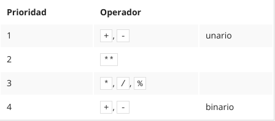

Modulo 2
Funciones
Una función (en este contexto) es una parte separada del código de computadora el cual es capaz de:
- Causar algún efecto (por ejemplo, enviar texto a la terminal, crear un archivo, dibujar una imagen, reproducir un sonido, etc.); esto es algo completamente inaudito en el mundo de las matemáticas.
- Evaluar un valor o algunos valores (por ejemplo, la raíz cuadrada de un valor o la longitud de un texto dado); esto es lo que hace que las funciones de Python sean parientes de los conceptos matemáticos.
- Además, muchas de las funciones de Python pueden hacer las dos cosas anteriores juntas.
- El nombre de la función debe ser significativo (el nombre de la función print es evidente), imprime en la terminal.
- También hay un tercer componente de la función, muy importante, el o los argumento(s). Las funciones de Python, por otro lado, son más versátiles. Dependiendo de las necesidades individuales, pueden aceptar cualquier número de argumentos, tantos como sea necesario para realizar sus tareas. Nota: algunas funciones de Python no necesitan ningún argumento.
- Nota: para distinguir las palabras comunes de los nombres de funciones, coloca un par de paréntesis vacíos después de sus nombres, incluso si la función correspondiente requiere uno o más argumentos. Esta es una medida estándar.
Manera en que python aborda una invocacion a una funcion
- Primero, Python comprueba si el nombre especificado es legal (explora sus datos internos para encontrar una función existente del nombre; si esta búsqueda falla, Python cancela el código).
- En segundo lugar, Python comprueba si los requisitos de la función para el número de argumentos le permiten invocar la función de esta manera (por ejemplo, si una función específica exige exactamente dos argumentos, cualquier invocación que entregue solo un argumento se considerará errónea y abortará la ejecución del código).
- Tercero, Python deja el código por un momento y salta dentro de la función que se desea invocar; por lo tanto, también toma los argumentos y los pasa a la función.
- Cuarto, la función ejecuta el código, provoca el efecto deseado (si lo hubiera), evalúa el (los) resultado(s) deseado(s) y termina la tarea.
- Finalmente, Python regresa al código (al lugar inmediatamente después de la invocación) y reanuda su ejecución.
Codigo practico
Caracteres de escape
Funcion print() - La manera posicional de pasar argumentos
La forma en que pasamos los argumentos a la función print() es la más común en Python, y se denomina manera posicional (este nombre proviene del hecho de que el significado del argumento está dictado por su posición, por ejemplo, el segundo argumento se emitirá después del primero, y no al revés).
Ej: print("Mi nombre es", "Python.")
Funcion print() - Arguementos palabras clave
El mecanismo se llama argumentos de palabras clave. El nombre se deriva del hecho de que el significado de estos argumentos no se toma de su ubicación (posición) sino de la palabra especial (palabra clave) utilizada para identificarlos.
- Cualquier argumento de palabra clave debe ponerse después del último argumento posicional (esto es muy importante).
- Argumento end elimina el salto de linea que se genera cuando se usan dos prints.
- Argumento sep separa los argumentos de print con el caracter especificado en el argumento.
Literales - los datos en si mismos
Son notaciones para representar valores fijos en el código. Python tiene varios tipos de literales.
LITERALES NUMERICOS
- Si un numero entero esta precedido por un código 0O o 0o (cero-o), el numero será tratado como un valor octal.
- La segunda convención nos permite utilizar números en hexadecimal. Dichos números deben ser precedidos por el prefijo 0x o 0X (cero-x).
- Python distingue entre numero flotantes y numeros enteros. 4 es un número entero, mientras que 4.0 es un número punto-flotante. El punto decimal es lo que determina si es flotante.
- Por otro lado, no solo el punto hace que un número sea flotante. Se puede utilizar la letra e.
- La letra E (también se puede utilizar la letra minúscula e - proviene de la palabra exponente) la cual significa por diez a la n potencia. Ejemplo: 3E8 -> 3 * 10^8
- El exponente (el valor después de la E) debe ser un valor entero.
- La base (el valor antes de la E) puede o no ser un valor entero.
- Python siempre elige la presentación más corta del número, y esto se debe de tomar en consideración al crear literales.
LITERALES CADENA
- Si se delimita una cadena con una comilla, se debe cerrar con una comilla.
- Si se inicia una cadena con un apóstrofe, se debe terminar con un apóstrofe.
LITERALES BOOLEANOS
- True o False
- Existe un literal especial más utilizado en Python: el literal None. Este literal es llamado un objeto de NonType (ningún tipo), y puede ser utilizado para representar la ausencia de un valor
Operadores Basicos
Cuando los datos y operadores se unen, forman juntos expresiones. La expresión más sencilla es el literal.
Exponenciacion
- Un signo de **** (doble asterisco) es un operador de exponenciación** (potencia). El argumento a la izquierda es la base, el de la derecha, el exponente.
- Cuando ambos ** argumentos son enteros, el resultado es entero también.
- Cuando al menos un ** argumento es flotante, el resultado también es flotante.
Multiplicacion y Division
- En la multiplicacion:
- Cuando ambos argumentos son enteros, el resultado es entero también.
- Cuando al menos un argumento es flotante, el resultado también es flotante.
- En la division:
- El resultado producido por el operador de división siempre es flotante.
Division Entera
Un símbolo de // (doble diagonal) es un operador de división entera. Difiere del operador estándar / en dos detalles:
- El resultado carece de la parte fraccionaria, está ausente (para los enteros), o siempre es igual a cero (para los flotantes); esto significa que los resultados siempre son redondeados.
- Se ajusta a la regla entero vs flotante (Igual que la multplicacion y potenciacion)
- El resultado de la división entera siempre se redondea al valor entero inferior mas cercano del resultado de la división no redondeada.
- Esto es muy importante: el redondeo siempre va hacia abajo.
- En caso de valores negativos se realiza siempre hacia el valor inferior. Ej. -6 // 4 => -2
Enlace
El enlace de un operador determina el orden en que se computan las operaciones de los operadores con la misma prioridad, los cuales se encuentran dentro de una misma expresión.
- Todos los operadores tienen enlazado hacia la izquierda a excepcion de la exponenciacion que utiliza enlazado hacia la derecha.
Lista de prioridades
Nota: se han enumerado los operadores en orden de la mas alta (1) a la mas baja (4) prioridad.

Variables
Backlinks: Python Essentials